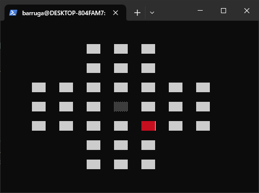
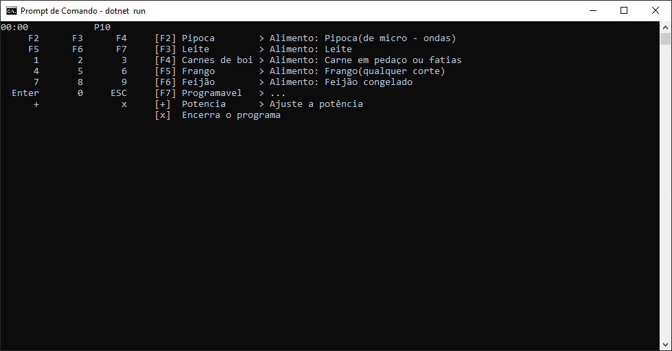

Projetos no GitHub
Resta 1 em Harbour/Clipper.
Jogo de tabuleiro que marcou minha infância onde o objetivo é terminar com um pino para vencer e os afixicionados como eu o objetivo bonus é terminar com esse último pino no centro do tabuleiro
 Ver no GitHubMicroondas em versão de Console
Um desafio de desenvolvimento de um microondas em versão de console
 [F2] Pipoca > Alimento: Pipoca(de micro - ondas) [F3] Leite > Alimento: Leite [F4] Carnes de boi > Alimento: Carne em pedaço ou fatias [F5] Frango > Alimento: Frango(qualquer corte) [F6] Feijão > Alimento: Feijão congelado [F7] Programavel > ... [+] Potencia > Ajuste a potência [x] Encerra o programa Ver no GitHubMicroondas em versão Web
Neste o objetivo era desenvolver um microondas em versão web usando HTML, CSS e Dotnet, fiz alguns ajustes e me espelhando no projeto de um conhecido implementei uma imagem como se houvesse algo dentro do microondas
Fora desenvolvido Uma API e um frontend em blazor
 Ver no GitHub
Ver no GitHub